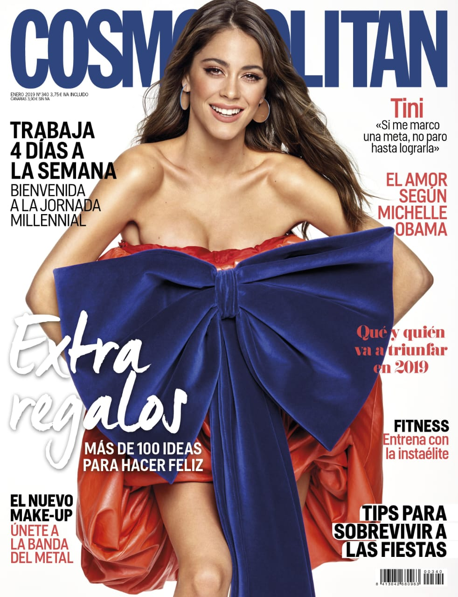
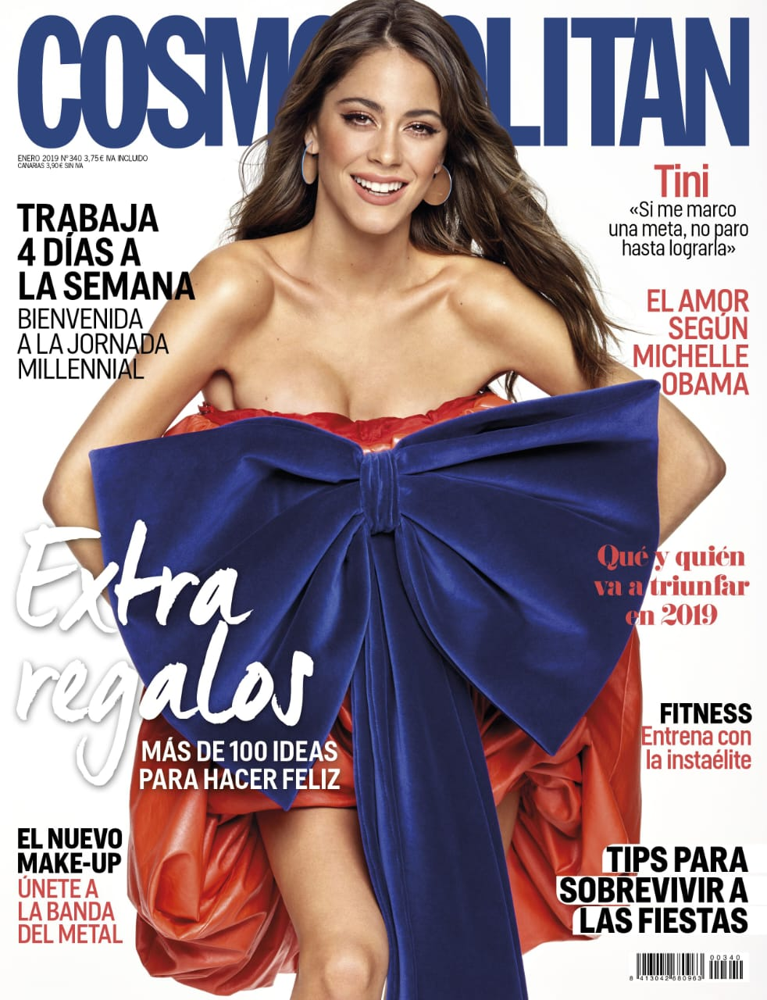

Biografía
Nombre completo: Martina Alejandra Stoessel Muzlera
Nacimiento: 21 de marzo de 1997, Buenos Aires, Argentina
Profesión: Cantante, actriz y compositora
Género musical: Pop latino, reguetón, dance pop
Tini saltó a la fama mundial interpretando a Violetta en la serie de Disney Channel. Desde entonces ha construido una carrera musical llena de energía, estilo y autenticidad. Es considerada una de las artistas más influyentes del pop latino actual.
Además de su música, Tini se ha destacado por su conexión con los fans, su presencia en causas solidarias y su influencia positiva en la moda y el empoderamiento femenino.
Carrera Artística
Desde muy joven mostró su talento en la actuación y la música. En 2012 protagonizó Violetta, un fenómeno internacional que la lanzó a la fama. Con su debut musical en 2016, Tini demostró que podía brillar por sí misma.
Ha colaborado con artistas como Sebastián Yatra, Karol G, Becky G, Manuel Turizo, María Becerra y más. Su versatilidad le ha permitido adaptarse a distintos géneros musicales, manteniendo siempre su identidad pop.
Sus giras mundiales y presentaciones en premios internacionales reflejan su crecimiento constante y su impacto en la música latina.
Discografía
- 2016: TINI (Martina Stoessel)
- 2018: Quiero Volver
- 2020: Tini Tini Tini
- 2023: Cupido
Cada álbum refleja una nueva etapa en su vida y su evolución artística. Cupido consolidó su madurez musical y su conexión emocional con su público.
Galería de Fotos
 
